I love the reinforcement learning (RL), and the combinatorial optimization (CO) is one perfect playground of it. The CO problem is somehow "neat" but complex enough to be non-trivial. Based on our benchmark (RL4CO), we have built a series of RL-based CO algorithms, covering the topic of foundation models, multi-objective, -agent, LLMs, real-world applications, and more.
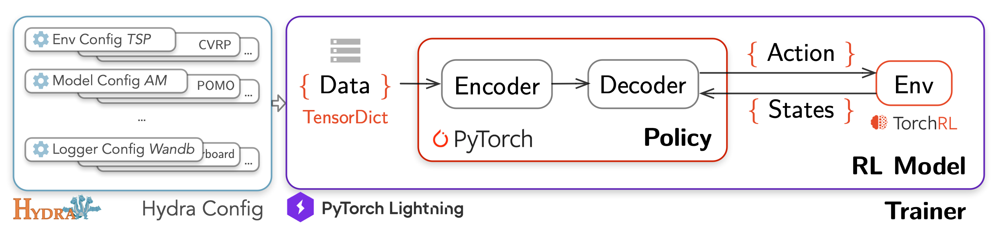
RLACO: a Unified Reinforcement Learning for Combinatorial Optimization Library
This is a work we have spent years on. An extensive Reinforcement Learning (RL) for Combinatorial Optimization (CO) benchmark. Our goal is to provide a unified framework for RL-based CO algorithms, and to facilitate reproducible research in this field, decoupling the science from the engineering. RL4CO is built upon: TorchRL: official PyTorch framework for RL algorithms and vectorized environments on GPUs; TensorDict: a library to easily handle heterogeneous data such as states, actions and rewards; PyTorch Lightning: a lightweight PyTorch wrapper for high-performance AI research; Hydra: a framework for elegantly configuring complex applications.
[Paper] [GitHub]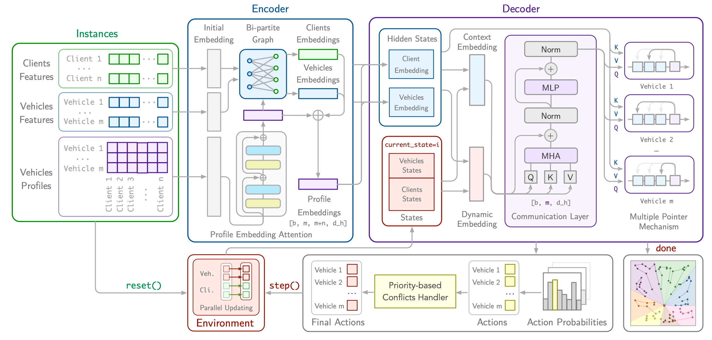
CAMP: Collaborative Attention Model with Profiles for Vehicle Routing Problems
We propose a Collaborative Attention Model with Profiles (CAMP), a novel approach that learns efficient solvers for PVRP using multi-agent reinforcement learning. CAMP employs a specialized attention-based encoder architecture to embed profiled client embeddings in parallel for each vehicle profile. We design a communication layer between agents for collaborative decision-making across profiled embeddings at each decoding step and a batched pointer mechanism to attend to the profiled embeddings to evaluate the likelihood of the next actions. We evaluate CAMP on two variants of PVRPs: PVRP with preferences, which explicitly influence the reward function, and PVRP with zone constraints with different numbers of agents and clients, demonstrating that our learned solvers achieve competitive results compared to both classical state-of-the-art neural multi-agent models in terms of solution quality and computational efficiency.
[Paper] [GitHub]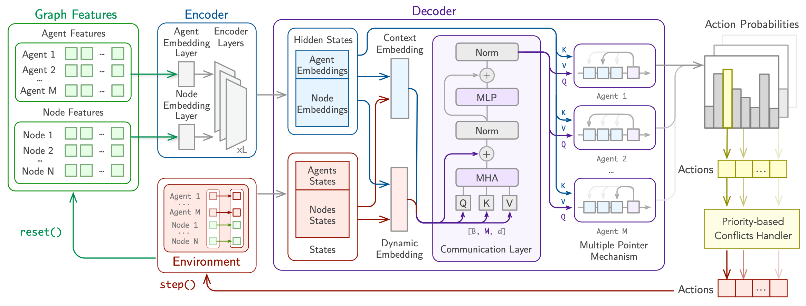
PARCO: Learning Parallel Autoregressive Policies for Efficient Multi-Agent Combinatorial Optimization
We introduce PARCO (Parallel AutoRegressive Combinatorial Optimization), a novel approach that learns fast surrogate solvers for multi-agent combinatorial problems with reinforcement learning by employing parallel autoregressive decoding. We propose a model with a Multiple Pointer Mechanism to efficiently decode multiple decisions simultaneously by different agents, enhanced by a Priority-based Conflict Handling scheme. Moreover, we design specialized Communication Layers that enable effective agent collaboration, thus enriching decision-making. We evaluate PARCO in representative multi-agent combinatorial problems in routing and scheduling and demonstrate that our learned solvers offer competitive results against both classical and neural baselines in terms of both solution quality and speed.
[Paper] [GitHub]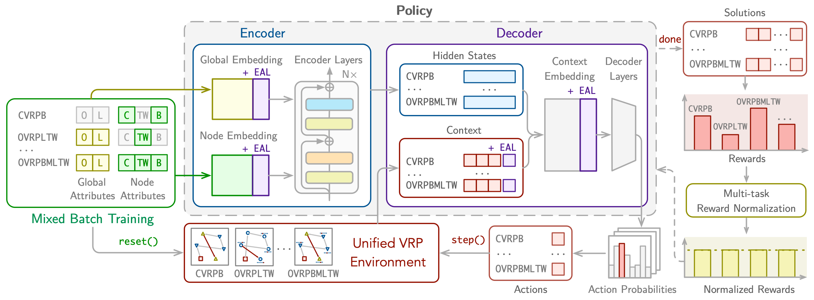
RouteFinder: Towards Foundation Models for Vehicle Routing Problems
We introduce RouteFinder, a comprehensive foundation model framework to tackle different Vehicle Routing Problem (VRP) variants. Our core idea is that a foundation model for VRPs should be able to represent variants by treating each as a subset of a generalized problem equipped with different attributes. We propose a unified VRP environment capable of efficiently handling any attribute combination. The RouteFinder model leverages a modern transformer-based encoder and global attribute embeddings to improve task representation. Additionally, we introduce two reinforcement learning techniques to enhance multitask performance: mixed batch training, which enables training on different variants at once, and multi-variant reward normalization to balance different reward scales. Finally, we propose efficient adapter layers that enable fine-tuning for new variants with unseen attributes. Extensive experiments on 24 VRP variants show RouteFinder achieves competitive results.
[Paper] [GitHub]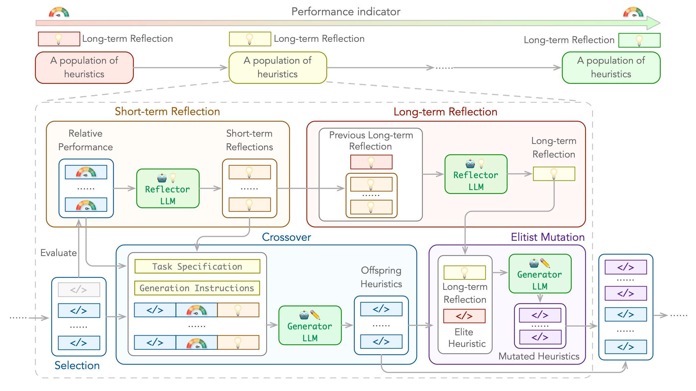
ReEvo: Large Language Models as Hyper-Heuristics with Reflective Evolution
We introduce Language Hyper-Heuristics (LHHs), an emerging variant of Hyper-Heuristics that leverages LLMs for heuristic generation, featuring minimal manual intervention and open-ended heuristic spaces. To empower LHHs, we present Reflective Evolution (ReEvo), a novel integration of evolutionary search for efficiently exploring the heuristic space, and LLM reflections to provide verbal gradients within the space. Across five heterogeneous algorithmic types, six different COPs, and both white-box and black-box views of COPs, ReEvo yields state-of-the-art and competitive meta-heuristics, evolutionary algorithms, heuristics, and neural solvers, while being more sample-efficient than prior LHHs.
[Paper] [GitHub]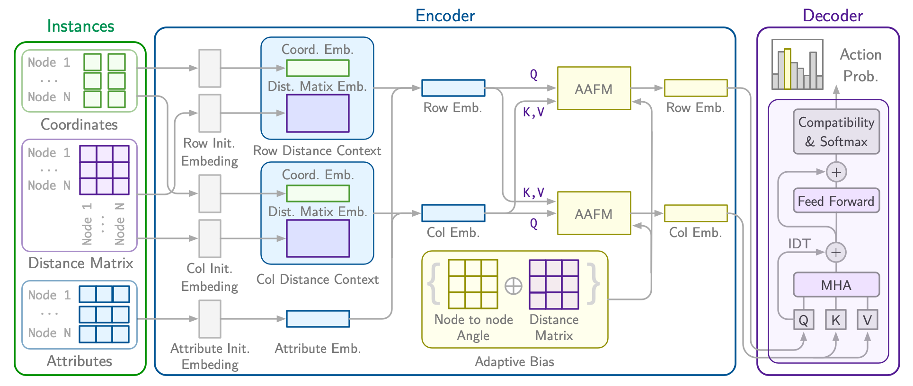
RRNCO: Neural Combinatorial Optimization for Real-World Routing
We introduce RRNCO (Real Routing NCO) to bridge the gap of NCO between synthetic and real-world VRPs in the critical aspects of both data and modeling. First, we introduce a new, openly available dataset with real-world data containing a diverse dataset of locations, distances, and duration matrices from 100 cities, considering realistic settings with actual routing distances and durations obtained from Open Source Routing Machine (OSRM). Second, we propose a novel approach that efficiently processes both node and edge features through contextual gating, enabling the construction of more informed node embedding, and we finally incorporate an Adaptation Attention Free Module (AAFM) with neural adaptive bias mechanisms that effectively integrates not only distance matrices but also angular relationships between nodes, allowing our model to capture rich structural information. RRNCO achieves state-of-the-art results in real-world VRPs among NCO methods.
[Paper] [GitHub]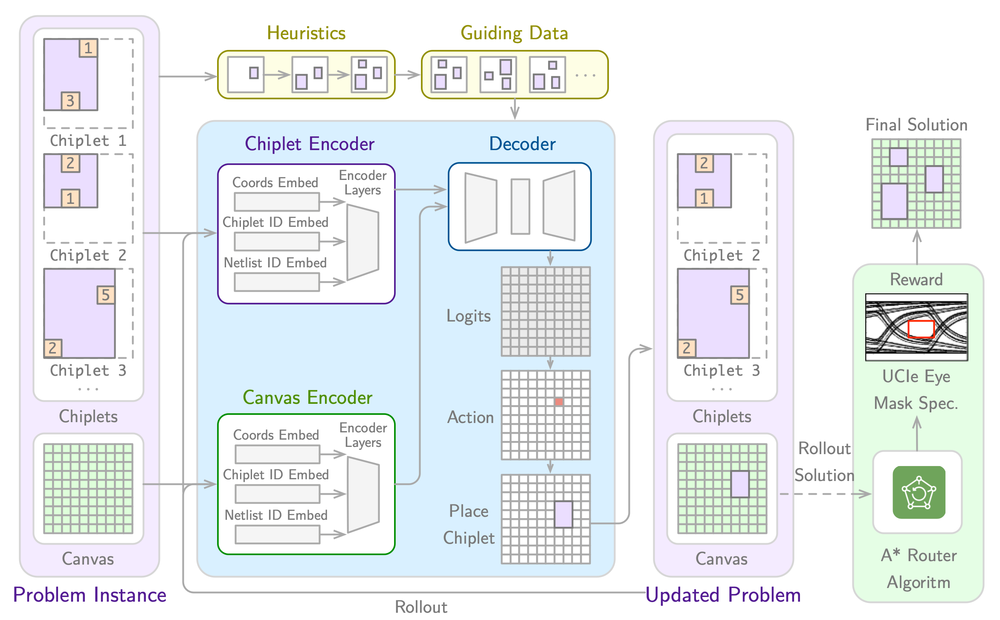
Accelerating Chiplet Placement & Routing Optimization with Machine Learning
The exponential growth of AI model sizes has amplified the demand for specialized hardware accelerators capable of efficiently managing complex workloads. To meet the customization needs of AI accelerators, recent advancements have enabled the use of chiplets – modular components of a larger integrated circuit that can be combined to create a complete system on a chip. Chiplet-based architectures offer a flexible and cost-effective solution by integrating modular chiplets with high-bandwidth memory (HBM), effectively addressing both computational power and memory capacity requirements. However, the increased complexity of chiplet designs introduces significant challenges in placement and routing. This paper presents a novel optimization benchmark and neural approach to the chiplet placement and routing problem, leveraging a hierarchical Markov decision process (MDP). We propose CHIPLETFORMER, a neural architecture that optimizes placement and routing by not only minimizing routing length but also improving datarate-dependent electrical system performance, aiming to enhance the efficiency and scalability of AI acceleration systems.
[Paper: NeurIPS 2025 Workshop Version] [GitHub]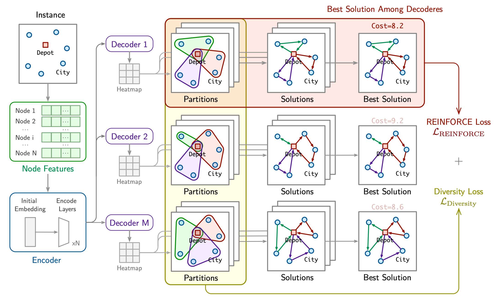
DivRoute: Learning Diversity Divide Strategies for Solving Large-scale Routing Problems
This paper presents DivRoute, an innovative reinforcement learning framework specifically designed to enhance solution diversity in large-scale routing prob- lems. Employing a non-autoregressive, divide-and-conquer methodology, Di- vRoute substantially improves both scalability and the diversity of solutions—key factors for superior performance in complex scenarios. Central to our model is a dual-loss system: a reinforced loss targeting the optimal decoder and a novel diversity loss that actively promotes a range of solution pathways, thereby fa- cilitating extensive exploration of the solution space. This architecture not only boosts computational efficiency by segmenting large problems into smaller, more manageable sub-problems but also significantly amplifies the diversity of the gen- erated solutions, a critical advantage for handling larger-scale instances. Through rigorous testing on benchmark datasets, DivRoute has demonstrated state-of-the- art performance, markedly surpassing existing methods in terms of scalability, diversity, and cross-distribution generalization, establishing a new standard for diverse solution generation in large-scale routing challenges
[Paper] [GitHub]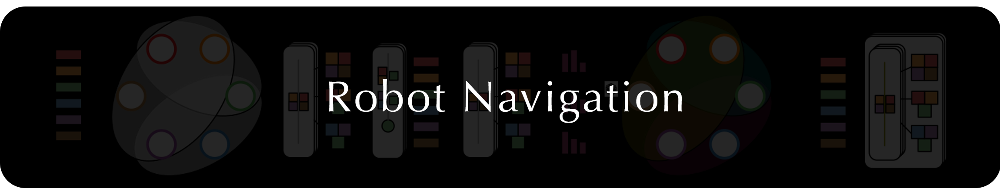
Robot navigation is another important application of RL, and it's interesting to see how RL could be applied to the real-world. We have built a pipeline of RL-based robot navigation algorithms, covering the topic of trajectory prediction, robot navigation policy, and more.
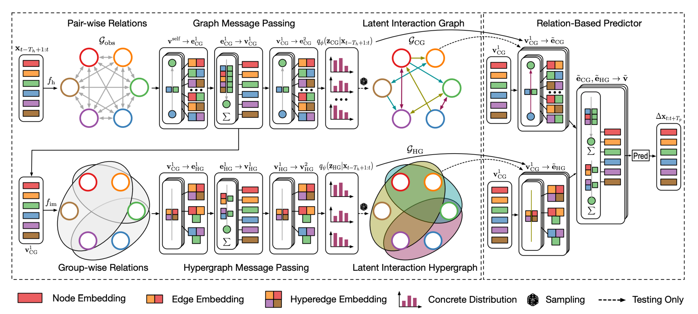
EvolveHyperGraph: Multi-Agent Trajectory Prediction with Dynamic Relational Reasoning
We propose a group-aware relational reasoning approach (named EvolveHypergraph) with explicit inference of the underlying dynamically evolving relational structures, and we demonstrate its effectiveness for multi-agent trajectory prediction. In addition to the edges between a pair of nodes (i.e., agents), we propose to infer hyperedges that adaptively connect multiple nodes to enable group-aware relational reasoning in an unsupervised manner without fixing the number of hyperedges. The proposed approach infers the dynamically evolving relation graphs and hypergraphs over time to capture the evolution of relations, which are used by the trajectory predictor to obtain future states. Moreover, we propose to regularize the smoothness of the relation evolution and the sparsity of the inferred graphs or hypergraphs, which effectively improves training stability and enhances the explainability of inferred relations. The proposed approach is validated on both synthetic crowd simulations and multiple real-world benchmark datasets. Our approach infers explainable, reasonable group-aware relations and achieves state-of-the-art performance in long-term prediction.
[Paper] [GitHub]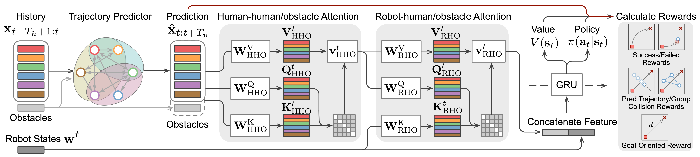
Multi-Agent Dynamic Relational Reasoning for Social Robot Navigation
We propose a systematic relational reasoning approach with explicit inference of the underlying dynamically evolving relational structures, and we demonstrate its effectiveness for multi-agent trajectory prediction and social robot navigation. The proposed approach is validated on synthetic crowd simulations and real-world benchmark datasets. Experiments demonstrate that the approach infers reasonable relations and achieves state-of-the-art prediction performance. In addition, we present a deep reinforcement learning (DRL) framework for social robot navigation, which incorporates relational reasoning and trajectory prediction systematically. In a groupbased crowd simulation, our method outperforms the strongest baseline by a significant margin in terms of safety, efficiency, and social compliance in dense, interactive scenarios. We also demonstrate the practical applicability of our method with real-world robot experiments.
[Paper] [GitHub]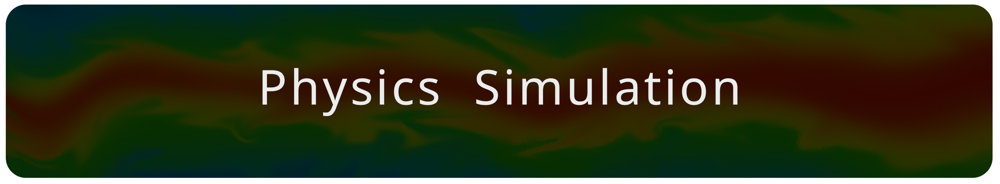
This is my first research interest. I was a big fan of game, thus my first research is about how to accelerate the physics simulation of games, like water, cloth, etc. My first paper works with the same concept as the Nvidia DLSS technology, which encouraged me a lot.
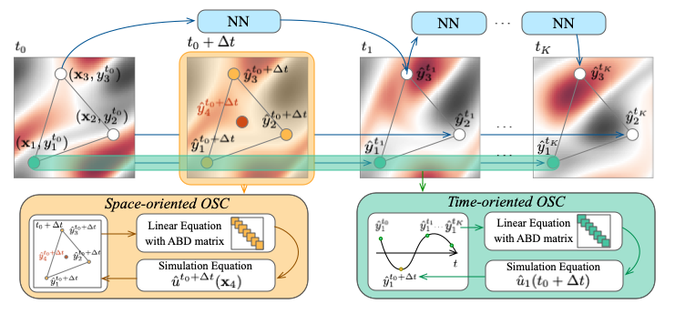
GraphSplineNets: Learning Efficient Surrogate Dynamic Models with Graph Spline Networks
We present GraphSplineNets, a novel deep-learning method to speed up the forecasting of physical systems by reducing the grid size and number of iteration steps of deep surrogate models. Our method uses two differentiable orthogonal spline collocation methods to efficiently predict response at any location in time and space. Additionally, we introduce an adaptive collocation strategy in space to prioritize sampling from the most important regions. GraphSplineNets improve the accuracy-speedup tradeoff in forecasting various dynamical systems with increasing complexity, including the heat equation, damped wave propagation, Navier-Stokes equations, and real-world ocean currents in both regular and irregular domains.
[Paper] [GitHub]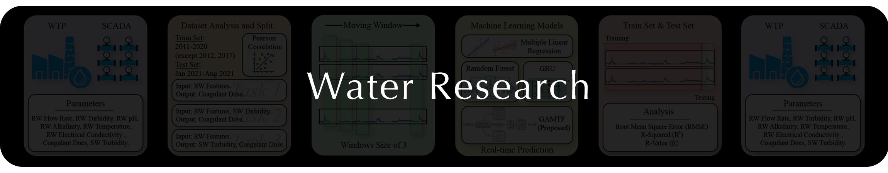
This is my main side research interest. Aside from the lab environment experiments, I also have a chance to work on the real-world deep learning models development and deployment. This topic allows me to learn a lot about the practical applications of deep learning.
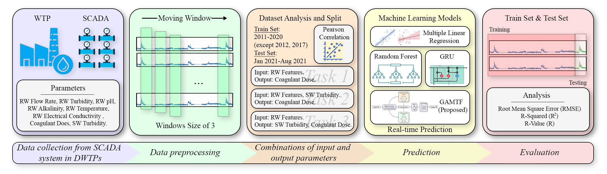
Coagulant dosage determination using deep learning-based graph attention multivariate time series forecasting model
This study provides a deep learning approach to determine coagulant dosage and/or the settled water turbidity using long-term data between 2011 and 2021 to include the effect of various weather conditions. A graph attention multivariate time series forecasting (GAMTF) model was developed to determine coagulant dosage and was compared with conventional machine learning and deep learning models. The GAMTF model (R2 = 0.94, RMSE = 3.55) outperformed the other models (R2 = 0.63 - 0.89, RMSE = 4.80 - 38.98), and successfully predicted both coagulant dosage and settled water turbidity simultaneously. The GAMTF model improved the prediction accuracy by considering the hidden interrelationships between features and the past states of features. The results demonstrate the first successful application of multivariate time series deep learning model, especially, a state-of-the-art graph attention-based model, using long-term data for decision-support systems in water treatment processes.
[Paper]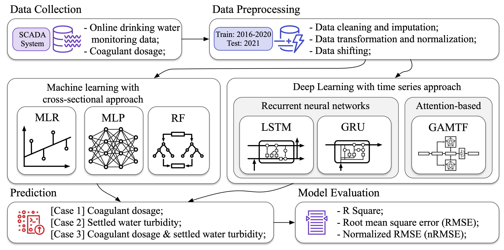
Comparing artificial and deep neural network models for prediction of coagulant amount and settled water turbidity: Lessons learned from big data in water treatment operations
This study investigated the use of machine learning models, including traditional and deep learning approaches, for predicting both coagulant dosage and settled water turbidity in the water treatment process using six years of operating data. The study found that deep learning models, which process temporal sequential data, significantly improved prediction accuracies in response to changing dynamics of water treatment processes. The results emphasize the importance of collecting large datasets for modeling water treatment processes to capture rapid changes in raw water quality, thereby increasing prediction accuracies. The modeling results provide suggestions for model selection, data collection, and monitoring implementation in water treatment plants, which can enhance the accuracy of predictions and ensure high-quality treated water.
[Paper]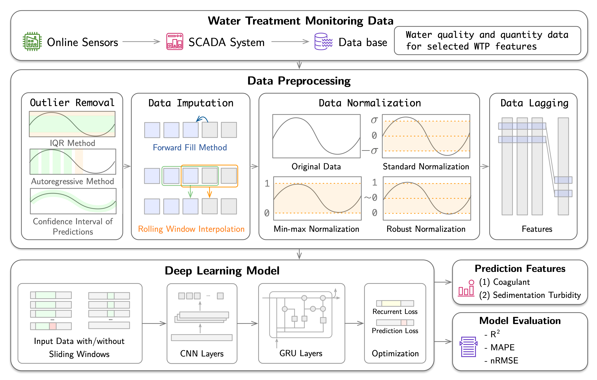
Optimizing coagulant dosage using deep learning models with large-scale data
This study introduces a novel approach to optimize coagulant dosage in water treatment processes by employing a deep learning model. The study utilized minute-by-minute data monitored in real time over a span of five years, marking the first attempt in drinking water process modeling to leverage such a comprehensive dataset. The deep learning model integrates a one-dimensional convolutional neural network (Conv1D) and gated recurrent unit (GRU) to effectively extract features and model complex time-series data. Initially, the model predicted coagulant dosage and sedimentation basin turbidity, validated against a physicochemical model. Subsequently, the model optimized coagulant dosage in two ways: 1) maintaining sedimentation basin turbidity below the 1.0 NTU guideline, and 2) analyzing changes in sedimentation basin turbidity resulting from reduced coagulant dosage (5–20%). The findings of the study highlight the effectiveness of the deep learning model in optimizing coagulant dosage with substantial reductions in coagulant dosage (approximately 22% reduction and 21 million KRW/year). The results demonstrate the potential of deep learning models in enhancing the efficiency and cost-effectiveness of water treatment processes, ultimately facilitating process automation.
[Paper]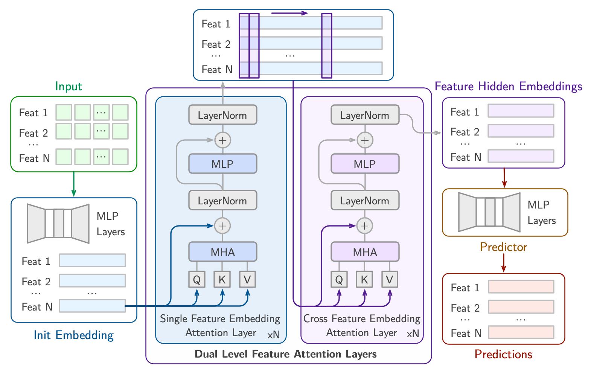
Deep learning-based coagulant dosage prediction for extreme events leveraging large-scale data
This study uses a deep learning model to predict coagulant dosage and settled water turbidity, particularly under abnormal conditions such as extreme weather conditions and operational changes. Real-time monitoring data from a WTP in South Korea included input parameters such as raw water quality indicators and operational settings, with output parameters being coagulant dosage and settled water turbidity. The data were preprocessed and used to train the deep learning model, which incorporated a Convolutional Neural Network for feature extraction and a Gated Recurrent Unit for time series analysis. The results showed robust predictive capabilities for coagulant dosage under both typical and extreme weather conditions (R2 = 0.87 and 0.86, respectively) and reasonably accurate predictions for settled water turbidity (R2 = 0.73 and 0.56, respectively). These findings highlight the model's potential for automation in WTPs, even under extreme weather conditions. However, the model's performance was compromised in the case of operational changes involving chemical transitions, as these were influenced by subjective decisions, thereby impacting data distributions. Compared to existing methods, our approach offers strong predictive capability for coagulant dosage and settled water turbidity even during extreme events, enhancing real-time operational efficiency. This study underscores the importance of utilizing large-scale data in water treatment process modeling to improve deep learning model's responsiveness to unforeseen events across various conditions.
[Paper]